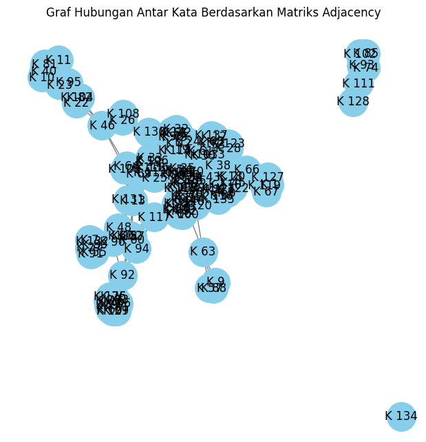

NAMA : A. MAKMUN ALJI
NIM : 210411100241
Keyword Extraction#
Penjelasan Konsep#
Graph#
Graph (graf) adalah struktur data yang digunakan untuk merepresentasikan hubungan antara objek. Dalam istilah sederhana, graf adalah kumpulan simpul (nodes) dan sisi (edges) yang menghubungkan pasangan simpul. Struktur ini sangat berguna dalam berbagai bidang, termasuk ilmu komputer, matematika, dan pemrosesan bahasa alami.
Komponen Utama Graf
Simpul (Node): Simpul, juga dikenal sebagai vertex, adalah elemen dasar dalam graf. Setiap simpul mewakili entitas atau objek tertentu. Dalam konteks pemrosesan bahasa alami, simpul bisa mewakili kalimat, kata, atau dokumen.
Sisi (Edge): Sisi adalah hubungan antara dua simpul. Sisi dapat bersifat:
Arah (Directed): Menunjukkan bahwa hubungan dari satu simpul ke simpul lainnya memiliki arah tertentu. Misalnya, dalam graf yang menggambarkan hubungan antara kalimat, jika kalimat A mengarah ke kalimat B, ini menunjukkan bahwa A memberikan informasi yang relevan untuk B.
Tidak Arah (Undirected): Menunjukkan bahwa hubungan antara dua simpul tidak memiliki arah tertentu. Contohnya, jika dua kalimat saling berhubungan, kita dapat menggambarkannya dengan sisi yang tidak terarah.
Tipe-Tipe Graf
Graf Berarah (Directed Graph): Dalam graf berarah, setiap sisi memiliki arah, mengindikasikan hubungan satu arah antara dua simpul. Contohnya, graf yang menunjukkan hubungan antar situs web, di mana satu situs mengarah ke situs lainnya.
Graf Tidak Berarah (Undirected Graph): Dalam graf tidak berarah, hubungan antara simpul bersifat dua arah. Contohnya, graf sosial di mana simpul mewakili orang dan sisi mewakili pertemanan antara mereka.
Graf Berat (Weighted Graph): Dalam graf berat, setiap sisi memiliki bobot yang menunjukkan kekuatan atau jarak dari hubungan tersebut. Misalnya, dalam graf rute perjalanan, bobot bisa mewakili jarak atau waktu tempuh antara dua titik.
Graf Tidak Berat (Unweighted Graph): Dalam graf tidak berat, semua sisi dianggap setara dan tidak memiliki bobot.
Representasi Graf
Graf dapat direpresentasikan dalam beberapa cara, di antaranya:
Matriks Adjacency: Matriks persegi di mana elemen di baris dan kolom merepresentasikan simpul, dan nilai dalam matriks menunjukkan ada tidaknya hubungan antara simpul-simpul tersebut. Misalnya, jika ada sisi antara simpul A dan B, maka elemen matriks pada posisi (A, B) akan diisi dengan 1 (atau bobot) dan 0 jika tidak ada sisi.
Daftar Ketetanggaan (Adjacency List): Dalam representasi ini, setiap simpul memiliki daftar yang berisi semua simpul yang terhubung langsung dengan simpul tersebut. Ini lebih efisien dalam penggunaan memori, terutama untuk graf yang jarang terhubung (sparse).
TF-IDF (Term Frequency-Inverse Document Frequency)#
TF-IDF (Term Frequency-Inverse Document Frequency) adalah suatu metode yang digunakan dalam pemrosesan bahasa alami (NLP) dan informasi retrieval untuk menilai seberapa penting suatu kata dalam suatu dokumen relatif terhadap koleksi atau kumpulan dokumen (corpus). TF-IDF sering digunakan untuk analisis teks, pengambilan informasi, dan pembuatan sistem rekomendasi.
Komponen TF-IDF
TF-IDF terdiri dari dua komponen utama:
Term Frequency (TF):
Mengukur seberapa sering suatu kata muncul dalam sebuah dokumen. Semakin sering kata muncul, semakin besar bobotnya.
Rumus untuk menghitung TF dari suatu kata \(( t )\) dalam dokumen \(( d )\): $\( \text{TF}(t, d) = \frac{\text{Jumlah kemunculan kata } t \text{ dalam } d}{\text{Total jumlah kata dalam } d} \)$
Inverse Document Frequency (IDF):
Mengukur seberapa penting kata tersebut dalam seluruh koleksi dokumen. Kata yang muncul di banyak dokumen memiliki bobot rendah, sedangkan kata yang muncul di sedikit dokumen memiliki bobot lebih tinggi.
Rumus untuk menghitung IDF dari suatu kata \(( t )\): $\( \text{IDF}(t) = \log\left(\frac{\text{Total jumlah dokumen}}{\text{Jumlah dokumen yang mengandung kata } t}\right) \)$
Dalam praktiknya, sering ditambahkan satu untuk menghindari pembagian dengan nol: $\( \text{IDF}(t) = \log\left(\frac{N}{\text{df}(t)} + 1\right) \)$
Di mana ( N ) adalah jumlah total dokumen dan \(( \text{df}(t) )\) adalah jumlah dokumen yang mengandung kata \(( t )\).
Menghitung TF-IDF
Setelah menghitung TF dan IDF, nilai TF-IDF untuk suatu kata \(( t )\) dalam dokumen \(( d )\) dapat dihitung dengan rumus: $\( \text{TF-IDF}(t, d) = \text{TF}(t, d) \times \text{IDF}(t) \)$
Interpretasi
Nilai Tinggi: Jika nilai TF-IDF tinggi, ini menunjukkan bahwa kata tersebut sering muncul dalam dokumen tertentu tetapi jarang muncul di seluruh koleksi dokumen. Kata ini dianggap penting untuk dokumen tersebut.
Nilai Rendah: Jika nilai TF-IDF rendah, ini bisa berarti kata tersebut umum dan muncul di banyak dokumen, sehingga tidak memberikan banyak informasi khusus tentang dokumen tersebut.
Cosine Similarity#
Cosine similarity adalah ukuran yang digunakan untuk menentukan seberapa mirip dua vektor dalam ruang multidimensi berdasarkan sudut di antara keduanya. Dalam konteks pemrosesan bahasa alami, cosine similarity sering digunakan untuk mengukur kesamaan antara teks yang direpresentasikan sebagai vektor, biasanya menggunakan teknik seperti TF-IDF atau word embeddings.
Konsep Dasar Cosine Similarity
Cosine similarity dihitung dengan menggunakan rumus berikut:
Di mana:
\((A)\) dan \((B)\) adalah dua vektor yang akan dibandingkan.
\((A \cdot B)\) adalah hasil kali dot (dot product) dari kedua vektor, yang mengukur seberapa besar dua vektor tersebut saling berhubungan.
\((|A|)\) dan \((|B|)\) adalah norma (magnitude) dari vektor \((A)\) dan \((B)\), yang menunjukkan panjang masing-masing vektor.
Nilai Cosine Similarity
Rentang Nilai:
1: Menunjukkan dua dokumen sangat mirip (atau identik). 0: Menunjukkan tidak ada kesamaan (dokumen tidak mirip). Dalam konteks pengolahan teks, nilai cosine similarity umumnya dianggap dalam rentang 0 hingga 1. Ini karena vektor representasi teks (seperti TF-IDF atau word embeddings) biasanya memiliki nilai positif.
Interpretasi:
Nilai 1: Dokumen A dan B identik dalam konteks konten. Nilai 0.5: Menunjukkan kesamaan moderat, artinya dokumen memiliki beberapa kata atau konsep yang sama. Nilai 0: Dokumen tidak memiliki kesamaan atau tidak berbagi kata kunci.
Matriks Adjacency#
Matriks adjacency adalah representasi matematis dari graf yang menunjukkan hubungan antara node (simpul) dalam graf tersebut. Dalam konteks pemrosesan bahasa alami dan analisis graph, matriks adjacency sering digunakan untuk merepresentasikan hubungan antar elemen, seperti kalimat dalam sebuah dokumen, berdasarkan kriteria tertentu.
Konsep Dasar Matriks Adjacency
Definisi: Matriks adjacency adalah matriks persegi yang digunakan untuk merepresentasikan graf. Setiap elemen dalam matriks menunjukkan ada tidaknya hubungan antara dua node. Dalam matriks adjacency, elemen pada baris ke-\((i)\) dan kolom ke-\((j)\) akan bernilai:
1 (atau nilai positif) jika ada edge (hubungan) antara node \((i)\) dan node \((j)\).
0 jika tidak ada edge antara keduanya.
Ukuran Matriks: Matriks adjacency untuk graf dengan \((n)\) node memiliki ukuran \((n \times n)\), di mana \((n)\) adalah jumlah total node dalam graf. Baris dan kolom pada matriks mewakili node yang ada dalam graf.
Contoh Matriks Adjacency
Misalkan kita memiliki graf sederhana dengan 4 node (A, B, C, dan D) dan hubungan sebagai berikut:
A terhubung ke B dan C.
B terhubung ke C.
C terhubung ke D.
Matriks adjacency untuk graf ini dapat dituliskan sebagai berikut:
Dalam matriks di atas:
Baris A menunjukkan bahwa A terhubung dengan B dan C.
Baris B menunjukkan bahwa B terhubung dengan C.
Baris C menunjukkan bahwa C terhubung dengan D.
Baris D menunjukkan bahwa D tidak terhubung dengan node manapun.
Implementasi#
Library#
!pip install Sastrawi
Requirement already satisfied: Sastrawi in /usr/local/lib/python3.10/dist-packages (1.0.1)
import gdown
import numpy as np
import pandas as pd
import nltk
from nltk.tokenize import word_tokenize, sent_tokenize
import re
from nltk.corpus import stopwords
from Sastrawi.Stemmer.StemmerFactory import StemmerFactory
from sklearn.feature_extraction.text import TfidfVectorizer,CountVectorizer, TfidfTransformer
from sklearn.metrics.pairwise import cosine_similarity
import networkx as nx
import matplotlib.pyplot as plt
import nltk
nltk.download('punkt')
nltk.download('stopwords')
nltk.download('punkt_tab')
[nltk_data] Downloading package punkt to /root/nltk_data...
[nltk_data] Package punkt is already up-to-date!
[nltk_data] Downloading package stopwords to /root/nltk_data...
[nltk_data] Package stopwords is already up-to-date!
[nltk_data] Downloading package punkt_tab to /root/nltk_data...
[nltk_data] Package punkt_tab is already up-to-date!
True
from google.colab import drive
drive.mount('/content/drive')
---------------------------------------------------------------------------
KeyboardInterrupt Traceback (most recent call last)
<ipython-input-4-d5df0069828e> in <cell line: 2>()
1 from google.colab import drive
----> 2 drive.mount('/content/drive')
/usr/local/lib/python3.10/dist-packages/google/colab/drive.py in mount(mountpoint, force_remount, timeout_ms, readonly)
98 def mount(mountpoint, force_remount=False, timeout_ms=120000, readonly=False):
99 """Mount your Google Drive at the specified mountpoint path."""
--> 100 return _mount(
101 mountpoint,
102 force_remount=force_remount,
/usr/local/lib/python3.10/dist-packages/google/colab/drive.py in _mount(mountpoint, force_remount, timeout_ms, ephemeral, readonly)
135 )
136 if ephemeral:
--> 137 _message.blocking_request(
138 'request_auth',
139 request={'authType': 'dfs_ephemeral'},
/usr/local/lib/python3.10/dist-packages/google/colab/_message.py in blocking_request(request_type, request, timeout_sec, parent)
174 request_type, request, parent=parent, expect_reply=True
175 )
--> 176 return read_reply_from_input(request_id, timeout_sec)
/usr/local/lib/python3.10/dist-packages/google/colab/_message.py in read_reply_from_input(message_id, timeout_sec)
94 reply = _read_next_input_message()
95 if reply == _NOT_READY or not isinstance(reply, dict):
---> 96 time.sleep(0.025)
97 continue
98 if (
KeyboardInterrupt:
dir = '/content/drive/MyDrive/PPW BARU/report/'
Load Dataset#
# Nama file yang akan dibaca
file_name = dir+'kompas.csv'
# Membaca file CSV dari folder lokal
df = pd.read_csv(file_name)
# Tampilkan beberapa baris pertama dari file CSV
print(df.head())
judul \
0 Spanyol Vs Serbia: La Roja Kehilangan Lamine Y...
1 Susunan Pemain China vs Indonesia: Asnawi Kapt...
2 Pengamat Sepak Bola Minta Timnas Indonesia Har...
3 Link Live Streaming China Vs Indonesia di Kual...
4 Persib Belum Kalah, Tyronne Rasakan Kompetitif...
waktu \
0 - 15/10/2024, 19:00 WIB
1 - 15/10/2024, 17:47 WIB
2 - 15/10/2024, 15:38 WIB
3 - 15/10/2024, 18:30 WIB
4 - 15/10/2024, 17:01 WIB
url \
0 https://bola.kompas.com/read/2024/10/15/190000...
1 https://bola.kompas.com/read/2024/10/15/174714...
2 https://bola.kompas.com/read/2024/10/15/153800...
3 https://bola.kompas.com/read/2024/10/15/183000...
4 https://bola.kompas.com/read/2024/10/15/170107...
konten kategori
0 KOMPAS.com - Pelatih timnas Spanyol, Luis De L... Bola
1 KOMPAS.com – Susunan pemain timnas Indonesia m... Bola
2 KOMPAS.com - Pengamat sepak bola, Mohamad Kusn... Bola
3 KOMPAS.com - Timnas Indonesia beberapa saat la... Bola
4 BANDUNG, KOMPAS.com - Persib Bandung jadi sala... Bola
df
| judul | waktu | url | konten | kategori | |
|---|---|---|---|---|---|
| 0 | Spanyol Vs Serbia: La Roja Kehilangan Lamine Y... | - 15/10/2024, 19:00 WIB | https://bola.kompas.com/read/2024/10/15/190000... | KOMPAS.com - Pelatih timnas Spanyol, Luis De L... | Bola |
| 1 | Susunan Pemain China vs Indonesia: Asnawi Kapt... | - 15/10/2024, 17:47 WIB | https://bola.kompas.com/read/2024/10/15/174714... | KOMPAS.com – Susunan pemain timnas Indonesia m... | Bola |
| 2 | Pengamat Sepak Bola Minta Timnas Indonesia Har... | - 15/10/2024, 15:38 WIB | https://bola.kompas.com/read/2024/10/15/153800... | KOMPAS.com - Pengamat sepak bola, Mohamad Kusn... | Bola |
| 3 | Link Live Streaming China Vs Indonesia di Kual... | - 15/10/2024, 18:30 WIB | https://bola.kompas.com/read/2024/10/15/183000... | KOMPAS.com - Timnas Indonesia beberapa saat la... | Bola |
| 4 | Persib Belum Kalah, Tyronne Rasakan Kompetitif... | - 15/10/2024, 17:01 WIB | https://bola.kompas.com/read/2024/10/15/170107... | BANDUNG, KOMPAS.com - Persib Bandung jadi sala... | Bola |
| ... | ... | ... | ... | ... | ... |
| 1472 | Penurunan Apa Saja yang Terjadi pada Lansia? I... | - 05/09/2024, 18:00 WIB | https://health.kompas.com/read/24I05180000468/... | KOMPAS.com - Seiring bertambahnya umur, setiap... | Health |
| 1473 | Apakah Minum Kopi Pahit Bagus untuk Kesehatan?... | - 05/09/2024, 16:00 WIB | https://health.kompas.com/read/24I05160000768/... | KOMPAS.com - Kopi kerap diminum untuk mengatas... | Health |
| 1474 | Sering Digunakan untuk Diet, Ini Manfaat Keseh... | - 05/09/2024, 13:37 WIB | https://health.kompas.com/read/24I05133717468/... | KOMPAS.com - Dalam beberapa tahun terakhir, cu... | Health |
| 1475 | Kenali "BEACH", Akronim untuk Tanda Peringatan... | - 05/09/2024, 14:00 WIB | https://health.kompas.com/read/24I05140000068/... | KOMPAS.com - Gejala kanker ovarium sering kali... | Health |
| 1476 | Apakah Bisa Orang Tanpa Diabetes Mengalami Hip... | - 05/09/2024, 12:00 WIB | https://health.kompas.com/read/24I05120000068/... | KOMPAS.com - Hipoglikemia umum terjadi pada pe... | Health |
1477 rows × 5 columns
berita = df["konten"].iloc[6]
print(berita)
KOMPAS.com - Timnas Indonesia akan berhadapan dengan China dalam matchday keempat Grup C Kualifikasi Piala Dunia 2026 zona Asia.
Pertandingan China melawan Indonesia akan berlangsung di Stadion di Stadion Qingdao Youth Football pada Selasa (15/10/2024), kickoff 19.00 WIB.
Link live streaming tertera di akhir artikel ini.
Skuad Garuda memiliki tekad untuk meraih kemenangan pertama di putaran ketiga Kualifikasi Piala Dunia 2026, setelah memainkan tiga laga dengan hasil imbang.
Tim asuhan Shin Tae-yong (STY) bermain imbang di tiga laga Grup C dengan Arab Saudi (1-1), Australia (0-0), dan Bahrain (2-2).
Baca juga: Pengamat Sepak Bola Minta Timnas Indonesia Harus Fokus Kalahkan China
Bersua dengan Indonesia, China akan memanfaatkan momentum laga kandang ini. Terlebih momentum untuk bangkit dari keterpurukan di tiga laga awal.
Dari tiga awal yang telah dirampungkan Negeri Tirai Bambu, mereka harus menelan kenyataan pahit. Di mana Tiongkok kalah secara beruntun tiga kali beruntun.
Tim besutan, Branko Ivankovic, takluk dari Jepang (0-7), Arab Saudi (1-2), dan Australia (1-3).
Pelatih asal Kroasia itu mewaspadai kualitas skuad Indonesia, terutama pemain-pemain yang bermain di luar negeri.
“Sebagian besar pemain mereka adalah pemain naturalisasi, dan mereka memainkan gaya sepak bola Eropa,” ujar Ivankovic, dikutip dari Global Times, saat sesi jumpa pers jelang laga Senin (14/10/2024).
“Kami telah melakukan latihan yang ditargetkan untuk menanggapi hal ini, memastikan para pemain kami akan memberikan yang terbaik, menekan dengan keras, dan menjalankan rencana permainan yang kami butuhkan untuk menang," lanjut pelatih berusia 70 tahun itu.
Baca juga: China Vs Indonesia, Saran Band Metal agar Timnas Indonesia Petik Kemenangan
Jelang laga ini, STY menyebut kedua tim memliliki kans yang sama untuk memenangkan pertandingan. Indonesia dan China memiliki peluang 50-50 untuk meraih tiga poin.
“Kedua tim memiliki peluang yang seimbang, 50-50. Hasil pertandingan besok akan sangat tergantung pada siapa yang mampu memaksimalkan peluang dan mencetak gol lebih banyak,” kata STY dalam sesi jumpa pers jelang laga China vs Indonesia, Senin (14/10/2024).
Timnas Indonesia dipastikan tidak akan diperkuat salah satu pemain belakang, yakni Jordi Amat. Jordi pulang lebih cepat sebab harus menjalani pemulihan cedera.
“Dengan berat hati, saya harus meninggalkan tim lebih cepat. Karena saya akan berfokus ke pemulihan lagi. Artinya, saya tidak bisa bermain untuk tim melawan Tiongkok nanti,” ujar Jordi, dikutip dari laman PSSI.
Link live streaming China vs Indonesia
Pertandingan China vs Indonesia dalam matchday keempat Grup C bisa disaksikan lewat tautan berikut >>> LINK.
Simak breaking news dan berita pilihan kami langsung di ponselmu. Pilih saluran andalanmu akses berita Kompas.com WhatsApp Channel : https://www.whatsapp.com/channel/0029VaFPbedBPzjZrk13HO3D. Pastikan kamu sudah install aplikasi WhatsApp ya.
Preprocessing#
Fungsi preprocess_text bertujuan untuk mempersiapkan teks untuk analisis dalam pemrosesan bahasa alami. Proses dimulai dengan mengubah teks menjadi huruf kecil dan membersihkannya dari tanda baca serta karakter khusus, kecuali titik. Setelah teks dibersihkan, fungsi ini melakukan tokenisasi untuk memisahkan kata-kata. Selanjutnya, daftar stopwords bahasa Indonesia diambil dan ditambahkan dengan stopword khusus seperti ‘kompas.com’. Kata-kata yang merupakan stopwords kemudian dihapus dari daftar. Akhirnya, kata-kata yang tersisa digabungkan kembali menjadi satu teks yang bersih, siap untuk analisis lebih lanjut. Fungsi ini mengembalikan teks yang telah diproses secara efektif.
def preprocess_text(text):
# 1. Ubah teks menjadi lowercase
text = text.lower()
text = text.replace("kompas.com - ", "")
text = text.replace("kompas.com ", "").split("simak breaking news")[0].strip()
# 2. Bersihkan karakter yang bukan huruf atau angka (non-word characters)
text = re.sub(r'[^a-zA-Z\s.]', ' ', text)
# text = re.sub(r"[^\w\s]", " ", text)
text = text.replace('\n', ' ')
# 3. Tokenisasi teks menjadi kalimat
sentences = sent_tokenize(text) # Memecah teks menjadi kalimat
# 4. Ambil stopwords bahasa Indonesia
stop_words = set(stopwords.words('indonesian'))
# 5. Tambahkan stopwords khusus seperti 'kompas.com'
custom_stopwords = {'kompas', 'com'}
stop_words.update(custom_stopwords)
# 6. Proses tiap kalimat: tokenisasi kata, hapus stopwords, lalu gabungkan kembali
cleaned_sentences = []
for sentence in sentences:
# Tokenisasi kata dalam kalimat
words = word_tokenize(sentence)
# Hapus stopwords
words_no_stop = [word for word in words if word not in stop_words]
# Gabungkan kembali kata-kata yang sudah dibersihkan menjadi kalimat
cleaned_sentence = ' '.join(words_no_stop)
# Tambahkan kalimat yang sudah dibersihkan ke daftar cleaned_sentences
cleaned_sentences.append(cleaned_sentence)
# final_text = ' '.join(cleaned_sentences)
return cleaned_sentences
cleaned_berita = preprocess_text(berita)
cleaned_berita
['timnas indonesia berhadapan china matchday keempat grup c kualifikasi piala dunia zona asia .',
'pertandingan china melawan indonesia stadion stadion qingdao youth football selasa kickoff .',
'wib .',
'link live streaming tertera artikel .',
'skuad garuda memiliki tekad meraih kemenangan putaran ketiga kualifikasi piala dunia memainkan laga hasil imbang .',
'tim asuhan shin tae yong sty bermain imbang laga grup c arab saudi australia bahrain .',
'baca pengamat sepak bola timnas indonesia fokus kalahkan china bersua indonesia china memanfaatkan momentum laga kandang .',
'momentum bangkit keterpurukan laga .',
'dirampungkan negeri tirai bambu menelan kenyataan pahit .',
'tiongkok kalah beruntun kali beruntun .',
'tim besutan branko ivankovic takluk jepang arab saudi australia .',
'pelatih kroasia mewaspadai kualitas skuad indonesia pemain pemain bermain negeri .',
'pemain pemain naturalisasi memainkan gaya sepak bola eropa ivankovic dikutip global times sesi jumpa pers jelang laga senin .',
'latihan ditargetkan menanggapi pemain terbaik menekan keras menjalankan rencana permainan butuhkan menang pelatih berusia .',
'baca china vs indonesia saran band metal timnas indonesia petik kemenangan jelang laga sty menyebut tim memliliki kans memenangkan pertandingan .',
'indonesia china memiliki peluang meraih poin .',
'tim memiliki peluang seimbang .',
'hasil pertandingan besok tergantung memaksimalkan peluang mencetak gol sty sesi jumpa pers jelang laga china vs indonesia senin .',
'timnas indonesia diperkuat salah pemain jordi .',
'jordi pulang cepat menjalani pemulihan cedera .',
'berat hati meninggalkan tim cepat .',
'berfokus pemulihan .',
'bermain tim melawan tiongkok jordi dikutip laman pssi .',
'link live streaming china vs indonesia pertandingan china vs indonesia matchday keempat grup c disaksikan tautan link .']
TF-IDF#
Selanjutnya enghitung TF-IDF dari teks berita yang telah dibersihkan. Pertama, objek TfidfVectorizer diinisialisasi dan digunakan untuk mengubah teks menjadi matriks TF-IDF. Fungsi fit_transform menghasilkan matriks yang menyimpan nilai TF-IDF untuk setiap kata dalam dokumen. Kemudian, get_feature_names_out digunakan untuk mengambil nama kata, dan hasilnya disajikan dalam bentuk DataFrame pandas (tfidf_df), di mana kolom mewakili kata dan baris mewakili dokumen, sehingga memudahkan analisis lebih lanjut.
# Menghitung TF-IDF
vectorizer = TfidfVectorizer()
tfidf_matrix = vectorizer.fit_transform(cleaned_berita)
# Mengambil nama fitur (kata-kata)
terms = vectorizer.get_feature_names_out()
tfidf_df = pd.DataFrame(tfidf_matrix.toarray(), columns=terms)
tfidf_df
| arab | artikel | asia | asuhan | australia | baca | bahrain | bambu | band | bangkit | ... | tim | times | timnas | tiongkok | tirai | vs | wib | yong | youth | zona | |
|---|---|---|---|---|---|---|---|---|---|---|---|---|---|---|---|---|---|---|---|---|---|
| 0 | 0.000000 | 0.000000 | 0.337619 | 0.000000 | 0.000000 | 0.000000 | 0.000000 | 0.000000 | 0.000000 | 0.000000 | ... | 0.000000 | 0.000000 | 0.249876 | 0.000000 | 0.000000 | 0.000000 | 0.0 | 0.000000 | 0.000000 | 0.337619 |
| 1 | 0.000000 | 0.000000 | 0.000000 | 0.000000 | 0.000000 | 0.000000 | 0.000000 | 0.000000 | 0.000000 | 0.000000 | ... | 0.000000 | 0.000000 | 0.000000 | 0.000000 | 0.000000 | 0.000000 | 0.0 | 0.000000 | 0.301585 | 0.000000 |
| 2 | 0.000000 | 0.000000 | 0.000000 | 0.000000 | 0.000000 | 0.000000 | 0.000000 | 0.000000 | 0.000000 | 0.000000 | ... | 0.000000 | 0.000000 | 0.000000 | 0.000000 | 0.000000 | 0.000000 | 1.0 | 0.000000 | 0.000000 | 0.000000 |
| 3 | 0.000000 | 0.479482 | 0.000000 | 0.000000 | 0.000000 | 0.000000 | 0.000000 | 0.000000 | 0.000000 | 0.000000 | ... | 0.000000 | 0.000000 | 0.000000 | 0.000000 | 0.000000 | 0.000000 | 0.0 | 0.000000 | 0.000000 | 0.000000 |
| 4 | 0.000000 | 0.000000 | 0.000000 | 0.000000 | 0.000000 | 0.000000 | 0.000000 | 0.000000 | 0.000000 | 0.000000 | ... | 0.000000 | 0.000000 | 0.000000 | 0.000000 | 0.000000 | 0.000000 | 0.0 | 0.000000 | 0.000000 | 0.000000 |
| 5 | 0.268637 | 0.000000 | 0.000000 | 0.303545 | 0.268637 | 0.000000 | 0.303545 | 0.000000 | 0.000000 | 0.000000 | ... | 0.195689 | 0.000000 | 0.000000 | 0.000000 | 0.000000 | 0.000000 | 0.0 | 0.303545 | 0.000000 | 0.000000 |
| 6 | 0.000000 | 0.000000 | 0.000000 | 0.000000 | 0.000000 | 0.248304 | 0.000000 | 0.000000 | 0.000000 | 0.000000 | ... | 0.000000 | 0.000000 | 0.207653 | 0.000000 | 0.000000 | 0.000000 | 0.0 | 0.000000 | 0.000000 | 0.000000 |
| 7 | 0.000000 | 0.000000 | 0.000000 | 0.000000 | 0.000000 | 0.000000 | 0.000000 | 0.000000 | 0.000000 | 0.563308 | ... | 0.000000 | 0.000000 | 0.000000 | 0.000000 | 0.000000 | 0.000000 | 0.0 | 0.000000 | 0.000000 | 0.000000 |
| 8 | 0.000000 | 0.000000 | 0.000000 | 0.000000 | 0.000000 | 0.000000 | 0.000000 | 0.383956 | 0.000000 | 0.000000 | ... | 0.000000 | 0.000000 | 0.000000 | 0.000000 | 0.383956 | 0.000000 | 0.0 | 0.000000 | 0.000000 | 0.000000 |
| 9 | 0.000000 | 0.000000 | 0.000000 | 0.000000 | 0.000000 | 0.000000 | 0.000000 | 0.000000 | 0.000000 | 0.000000 | ... | 0.000000 | 0.000000 | 0.000000 | 0.339801 | 0.000000 | 0.000000 | 0.0 | 0.000000 | 0.000000 | 0.000000 |
| 10 | 0.322116 | 0.000000 | 0.000000 | 0.000000 | 0.322116 | 0.000000 | 0.000000 | 0.000000 | 0.000000 | 0.000000 | ... | 0.234646 | 0.000000 | 0.000000 | 0.000000 | 0.000000 | 0.000000 | 0.0 | 0.000000 | 0.000000 | 0.000000 |
| 11 | 0.000000 | 0.000000 | 0.000000 | 0.000000 | 0.000000 | 0.000000 | 0.000000 | 0.000000 | 0.000000 | 0.000000 | ... | 0.000000 | 0.000000 | 0.000000 | 0.000000 | 0.000000 | 0.000000 | 0.0 | 0.000000 | 0.000000 | 0.000000 |
| 12 | 0.000000 | 0.000000 | 0.000000 | 0.000000 | 0.000000 | 0.000000 | 0.000000 | 0.000000 | 0.000000 | 0.000000 | ... | 0.000000 | 0.256042 | 0.000000 | 0.000000 | 0.000000 | 0.000000 | 0.0 | 0.000000 | 0.000000 | 0.000000 |
| 13 | 0.000000 | 0.000000 | 0.000000 | 0.000000 | 0.000000 | 0.000000 | 0.000000 | 0.000000 | 0.000000 | 0.000000 | ... | 0.000000 | 0.000000 | 0.000000 | 0.000000 | 0.000000 | 0.000000 | 0.0 | 0.000000 | 0.000000 | 0.000000 |
| 14 | 0.000000 | 0.000000 | 0.000000 | 0.000000 | 0.000000 | 0.229025 | 0.000000 | 0.000000 | 0.258786 | 0.000000 | ... | 0.166834 | 0.000000 | 0.191531 | 0.000000 | 0.000000 | 0.207909 | 0.0 | 0.000000 | 0.000000 | 0.000000 |
| 15 | 0.000000 | 0.000000 | 0.000000 | 0.000000 | 0.000000 | 0.000000 | 0.000000 | 0.000000 | 0.000000 | 0.000000 | ... | 0.000000 | 0.000000 | 0.000000 | 0.000000 | 0.000000 | 0.000000 | 0.0 | 0.000000 | 0.000000 | 0.000000 |
| 16 | 0.000000 | 0.000000 | 0.000000 | 0.000000 | 0.000000 | 0.000000 | 0.000000 | 0.000000 | 0.000000 | 0.000000 | ... | 0.391866 | 0.000000 | 0.000000 | 0.000000 | 0.000000 | 0.000000 | 0.0 | 0.000000 | 0.000000 | 0.000000 |
| 17 | 0.000000 | 0.000000 | 0.000000 | 0.000000 | 0.000000 | 0.000000 | 0.000000 | 0.000000 | 0.000000 | 0.000000 | ... | 0.000000 | 0.000000 | 0.000000 | 0.000000 | 0.000000 | 0.222162 | 0.0 | 0.000000 | 0.000000 | 0.000000 |
| 18 | 0.000000 | 0.000000 | 0.000000 | 0.000000 | 0.000000 | 0.000000 | 0.000000 | 0.000000 | 0.000000 | 0.000000 | ... | 0.000000 | 0.000000 | 0.368384 | 0.000000 | 0.000000 | 0.000000 | 0.0 | 0.000000 | 0.000000 | 0.000000 |
| 19 | 0.000000 | 0.000000 | 0.000000 | 0.000000 | 0.000000 | 0.000000 | 0.000000 | 0.000000 | 0.000000 | 0.000000 | ... | 0.000000 | 0.000000 | 0.000000 | 0.000000 | 0.000000 | 0.000000 | 0.0 | 0.000000 | 0.000000 | 0.000000 |
| 20 | 0.000000 | 0.000000 | 0.000000 | 0.000000 | 0.000000 | 0.000000 | 0.000000 | 0.000000 | 0.000000 | 0.000000 | ... | 0.314615 | 0.000000 | 0.000000 | 0.000000 | 0.000000 | 0.000000 | 0.0 | 0.000000 | 0.000000 | 0.000000 |
| 21 | 0.000000 | 0.000000 | 0.000000 | 0.000000 | 0.000000 | 0.000000 | 0.000000 | 0.000000 | 0.000000 | 0.000000 | ... | 0.000000 | 0.000000 | 0.000000 | 0.000000 | 0.000000 | 0.000000 | 0.0 | 0.000000 | 0.000000 | 0.000000 |
| 22 | 0.000000 | 0.000000 | 0.000000 | 0.000000 | 0.000000 | 0.000000 | 0.000000 | 0.000000 | 0.000000 | 0.000000 | ... | 0.261966 | 0.000000 | 0.000000 | 0.359619 | 0.000000 | 0.000000 | 0.0 | 0.000000 | 0.000000 | 0.000000 |
| 23 | 0.000000 | 0.000000 | 0.000000 | 0.000000 | 0.000000 | 0.000000 | 0.000000 | 0.000000 | 0.000000 | 0.000000 | ... | 0.000000 | 0.000000 | 0.000000 | 0.000000 | 0.000000 | 0.419154 | 0.0 | 0.000000 | 0.000000 | 0.000000 |
24 rows × 138 columns
Cosine Similarity#
Setalah mendapatkan bobot dari TF-IDF, kemudian menghitung cosine similarity antara semua pasangan kata yang terdapat dalam teks berita yang telah diproses sebelumnya. Pertama, fungsi cosine_similarity diterapkan pada transpos matriks TF-IDF (tfidf_matrix.T), yang menghasilkan matriks cosine similarity yang menunjukkan sejauh mana setiap pasangan kata saling mirip dalam konteks penggunaannya. Selanjutnya, hasil perhitungan tersebut disajikan dalam bentuk DataFrame pandas (cosine_sim), di mana indeks dan kolomnya mewakili kata-kata, sehingga memudahkan analisis kesamaan antar kata berdasarkan konteks mereka dalam dokumen.
# Menghitung cosine similarity antara semua pasangan kalimat
cosine = cosine_similarity(tfidf_df.T)
# Membuat DataFrame untuk cosine similarity
cosine_sim = pd.DataFrame(cosine, index=terms, columns=terms)
cosine_sim
| arab | artikel | asia | asuhan | australia | baca | bahrain | bambu | band | bangkit | ... | tim | times | timnas | tiongkok | tirai | vs | wib | yong | youth | zona | |
|---|---|---|---|---|---|---|---|---|---|---|---|---|---|---|---|---|---|---|---|---|---|
| arab | 1.000000 | 0.0 | 0.0 | 0.640476 | 1.000000 | 0.000000 | 0.640476 | 0.0 | 0.000000 | 0.0 | ... | 0.459388 | 0.0 | 0.000000 | 0.0 | 0.0 | 0.0 | 0.0 | 0.640476 | 0.0 | 0.0 |
| artikel | 0.000000 | 1.0 | 0.0 | 0.000000 | 0.000000 | 0.000000 | 0.000000 | 0.0 | 0.000000 | 0.0 | ... | 0.000000 | 0.0 | 0.000000 | 0.0 | 0.0 | 0.0 | 0.0 | 0.000000 | 0.0 | 0.0 |
| asia | 0.000000 | 0.0 | 1.0 | 0.000000 | 0.000000 | 0.000000 | 0.000000 | 0.0 | 0.000000 | 0.0 | ... | 0.000000 | 0.0 | 0.473961 | 0.0 | 0.0 | 0.0 | 0.0 | 0.000000 | 0.0 | 1.0 |
| asuhan | 0.640476 | 0.0 | 0.0 | 1.000000 | 0.640476 | 0.000000 | 1.000000 | 0.0 | 0.000000 | 0.0 | ... | 0.294227 | 0.0 | 0.000000 | 0.0 | 0.0 | 0.0 | 0.0 | 1.000000 | 0.0 | 0.0 |
| australia | 1.000000 | 0.0 | 0.0 | 0.640476 | 1.000000 | 0.000000 | 0.640476 | 0.0 | 0.000000 | 0.0 | ... | 0.459388 | 0.0 | 0.000000 | 0.0 | 0.0 | 0.0 | 0.0 | 0.640476 | 0.0 | 0.0 |
| ... | ... | ... | ... | ... | ... | ... | ... | ... | ... | ... | ... | ... | ... | ... | ... | ... | ... | ... | ... | ... | ... |
| vs | 0.000000 | 0.0 | 0.0 | 0.000000 | 0.000000 | 0.272153 | 0.000000 | 0.0 | 0.401408 | 0.0 | ... | 0.100690 | 0.0 | 0.145828 | 0.0 | 0.0 | 1.0 | 0.0 | 0.000000 | 0.0 | 0.0 |
| wib | 0.000000 | 0.0 | 0.0 | 0.000000 | 0.000000 | 0.000000 | 0.000000 | 0.0 | 0.000000 | 0.0 | ... | 0.000000 | 0.0 | 0.000000 | 0.0 | 0.0 | 0.0 | 1.0 | 0.000000 | 0.0 | 0.0 |
| yong | 0.640476 | 0.0 | 0.0 | 1.000000 | 0.640476 | 0.000000 | 1.000000 | 0.0 | 0.000000 | 0.0 | ... | 0.294227 | 0.0 | 0.000000 | 0.0 | 0.0 | 0.0 | 0.0 | 1.000000 | 0.0 | 0.0 |
| youth | 0.000000 | 0.0 | 0.0 | 0.000000 | 0.000000 | 0.000000 | 0.000000 | 0.0 | 0.000000 | 0.0 | ... | 0.000000 | 0.0 | 0.000000 | 0.0 | 0.0 | 0.0 | 0.0 | 0.000000 | 1.0 | 0.0 |
| zona | 0.000000 | 0.0 | 1.0 | 0.000000 | 0.000000 | 0.000000 | 0.000000 | 0.0 | 0.000000 | 0.0 | ... | 0.000000 | 0.0 | 0.473961 | 0.0 | 0.0 | 0.0 | 0.0 | 0.000000 | 0.0 | 1.0 |
138 rows × 138 columns
Matrik Adjensi#
Kemudian membangun matriks adjensi berdasarkan cosine similarity antara kata-kata dalam teks berita yang telah diproses. Pertama, sebuah threshold (batas) ditetapkan sebesar 0,5. Kemudian, nilai NaN pada DataFrame cosine similarity diisi dengan nol menggunakan fungsi fillna(0). Selanjutnya, matriks adjensi dibuat dengan membandingkan nilai cosine similarity yang telah diisi dengan threshold; jika nilai similarity lebih besar dari threshold, maka akan diubah menjadi 1, sebaliknya menjadi 0.
# Mengatur threshold untuk membangun matriks adjensi
threshold = 0.5
# Menangani nilai NaN pada cosine_sim
cosine_sim_filled = cosine_sim.fillna(0)
# Membuat matriks adjensi berdasarkan cosine similarity
adjacency = (cosine_sim_filled.values > threshold).astype(int)
adjacency_matrix = pd.DataFrame(adjacency, columns=terms, index=terms)
adjacency_matrix
| arab | artikel | asia | asuhan | australia | baca | bahrain | bambu | band | bangkit | ... | tim | times | timnas | tiongkok | tirai | vs | wib | yong | youth | zona | |
|---|---|---|---|---|---|---|---|---|---|---|---|---|---|---|---|---|---|---|---|---|---|
| arab | 1 | 0 | 0 | 1 | 1 | 0 | 1 | 0 | 0 | 0 | ... | 0 | 0 | 0 | 0 | 0 | 0 | 0 | 1 | 0 | 0 |
| artikel | 0 | 1 | 0 | 0 | 0 | 0 | 0 | 0 | 0 | 0 | ... | 0 | 0 | 0 | 0 | 0 | 0 | 0 | 0 | 0 | 0 |
| asia | 0 | 0 | 1 | 0 | 0 | 0 | 0 | 0 | 0 | 0 | ... | 0 | 0 | 0 | 0 | 0 | 0 | 0 | 0 | 0 | 1 |
| asuhan | 1 | 0 | 0 | 1 | 1 | 0 | 1 | 0 | 0 | 0 | ... | 0 | 0 | 0 | 0 | 0 | 0 | 0 | 1 | 0 | 0 |
| australia | 1 | 0 | 0 | 1 | 1 | 0 | 1 | 0 | 0 | 0 | ... | 0 | 0 | 0 | 0 | 0 | 0 | 0 | 1 | 0 | 0 |
| ... | ... | ... | ... | ... | ... | ... | ... | ... | ... | ... | ... | ... | ... | ... | ... | ... | ... | ... | ... | ... | ... |
| vs | 0 | 0 | 0 | 0 | 0 | 0 | 0 | 0 | 0 | 0 | ... | 0 | 0 | 0 | 0 | 0 | 1 | 0 | 0 | 0 | 0 |
| wib | 0 | 0 | 0 | 0 | 0 | 0 | 0 | 0 | 0 | 0 | ... | 0 | 0 | 0 | 0 | 0 | 0 | 1 | 0 | 0 | 0 |
| yong | 1 | 0 | 0 | 1 | 1 | 0 | 1 | 0 | 0 | 0 | ... | 0 | 0 | 0 | 0 | 0 | 0 | 0 | 1 | 0 | 0 |
| youth | 0 | 0 | 0 | 0 | 0 | 0 | 0 | 0 | 0 | 0 | ... | 0 | 0 | 0 | 0 | 0 | 0 | 0 | 0 | 1 | 0 |
| zona | 0 | 0 | 1 | 0 | 0 | 0 | 0 | 0 | 0 | 0 | ... | 0 | 0 | 0 | 0 | 0 | 0 | 0 | 0 | 0 | 1 |
138 rows × 138 columns
Graph#
# Membuat graf
G = nx.Graph()
# Tambahkan node (kata)
for i in range(len(adjacency_matrix)):
G.add_node(i)
# Tambahkan edge (hubungan) antara Kata berdasarkan matriks adjensi
for i in range(len(adjacency_matrix)):
for j in range(len(adjacency_matrix)):
similarity = adjacency_matrix.iloc[i, j]
if similarity > 0 and i != j:
G.add_edge(i, j, weight=similarity)
# Visualisasikan grafik
pos = nx.spring_layout(G)
# Membuat label node yang hanya menggunakan nomor indeks
labels = {i: f'K {i}' for i in G.nodes()}
plt.figure(figsize=(6, 6))
nx.draw(G, pos, with_labels=True, labels=labels, node_size=900, node_color='skyblue', edge_color='gray')
plt.title('Graf Hubungan Antar Kata Berdasarkan Matriks Adjacency')
plt.show()

Page Rank#
kode dibawah ini digunakan untuk menghitung dan mencetak nilai PageRank dari node dalam sebuah graf. Kegunaan PageRank adalah untuk mengukur pentingnya atau pengaruh suatu node (atau kata, dalam konteks analisis teks) berdasarkan struktur graf
pagerank = nx.pagerank(G)
sorted_pagerank= sorted(pagerank.items(), key=lambda x: x[1], reverse=True)
print("Page Rank :")
for node, pagerank in sorted_pagerank:
print(f"Node {node}: {pagerank:.4f}")
Page Rank :
Node 44: 0.0150
Node 120: 0.0133
Node 5: 0.0128
Node 92: 0.0119
Node 99: 0.0117
Node 23: 0.0102
Node 69: 0.0101
Node 90: 0.0100
Node 46: 0.0097
Node 54: 0.0094
Node 74: 0.0093
Node 93: 0.0093
Node 39: 0.0091
Node 24: 0.0090
Node 47: 0.0089
Node 98: 0.0089
Node 113: 0.0089
Node 115: 0.0089
Node 66: 0.0088
Node 53: 0.0086
Node 68: 0.0086
Node 31: 0.0086
Node 35: 0.0086
Node 36: 0.0086
Node 89: 0.0086
Node 129: 0.0086
Node 131: 0.0086
Node 0: 0.0086
Node 4: 0.0086
Node 110: 0.0086
Node 19: 0.0085
Node 114: 0.0085
Node 25: 0.0082
Node 43: 0.0082
Node 22: 0.0080
Node 82: 0.0080
Node 104: 0.0080
Node 30: 0.0080
Node 61: 0.0080
Node 101: 0.0080
Node 111: 0.0079
Node 117: 0.0078
Node 70: 0.0077
Node 34: 0.0075
Node 58: 0.0075
Node 105: 0.0075
Node 124: 0.0075
Node 16: 0.0075
Node 21: 0.0075
Node 29: 0.0075
Node 56: 0.0075
Node 65: 0.0075
Node 76: 0.0075
Node 77: 0.0075
Node 79: 0.0075
Node 83: 0.0075
Node 97: 0.0075
Node 107: 0.0075
Node 125: 0.0075
Node 41: 0.0075
Node 95: 0.0075
Node 38: 0.0074
Node 17: 0.0074
Node 37: 0.0074
Node 71: 0.0074
Node 78: 0.0074
Node 126: 0.0074
Node 8: 0.0071
Node 52: 0.0071
Node 73: 0.0071
Node 75: 0.0071
Node 84: 0.0071
Node 86: 0.0071
Node 100: 0.0071
Node 109: 0.0071
Node 3: 0.0071
Node 6: 0.0071
Node 116: 0.0071
Node 121: 0.0071
Node 135: 0.0071
Node 85: 0.0070
Node 102: 0.0070
Node 13: 0.0067
Node 64: 0.0065
Node 103: 0.0065
Node 14: 0.0065
Node 32: 0.0065
Node 49: 0.0065
Node 51: 0.0065
Node 72: 0.0065
Node 96: 0.0065
Node 63: 0.0064
Node 7: 0.0064
Node 27: 0.0064
Node 55: 0.0064
Node 80: 0.0064
Node 91: 0.0064
Node 132: 0.0064
Node 33: 0.0064
Node 59: 0.0064
Node 106: 0.0064
Node 112: 0.0064
Node 118: 0.0064
Node 136: 0.0064
Node 2: 0.0062
Node 12: 0.0062
Node 137: 0.0062
Node 60: 0.0062
Node 62: 0.0062
Node 87: 0.0062
Node 133: 0.0060
Node 1: 0.0060
Node 67: 0.0060
Node 119: 0.0060
Node 127: 0.0060
Node 10: 0.0059
Node 40: 0.0059
Node 81: 0.0059
Node 18: 0.0055
Node 20: 0.0055
Node 45: 0.0055
Node 122: 0.0055
Node 28: 0.0052
Node 123: 0.0052
Node 130: 0.0052
Node 9: 0.0050
Node 57: 0.0050
Node 88: 0.0050
Node 15: 0.0049
Node 48: 0.0049
Node 50: 0.0049
Node 42: 0.0049
Node 26: 0.0047
Node 108: 0.0047
Node 94: 0.0046
Node 128: 0.0033
Node 11: 0.0027
Node 134: 0.0011
print("5 Node Tertinggi Page Rank :")
sentence = ""
for node, pagerank in sorted_pagerank[:5]:
top_sentence = terms[node]
sentence += top_sentence + ", "
print(f"Node {node}: Page Rank = {pagerank:.4f}")
print(f"Kalimat: {top_sentence}")
5 Node Tertinggi Page Rank :
Node 44: Page Rank = 0.0150
Kalimat: jelang
Node 120: Page Rank = 0.0133
Kalimat: sty
Node 5: Page Rank = 0.0128
Kalimat: baca
Node 92: Page Rank = 0.0119
Kalimat: pelatih
Node 99: Page Rank = 0.0117
Kalimat: pertandingan
Kata Kunci Berita#
print('Kata Kunci :', sentence)
Kata Kunci : jelang, sty, baca, pelatih, pertandingan,